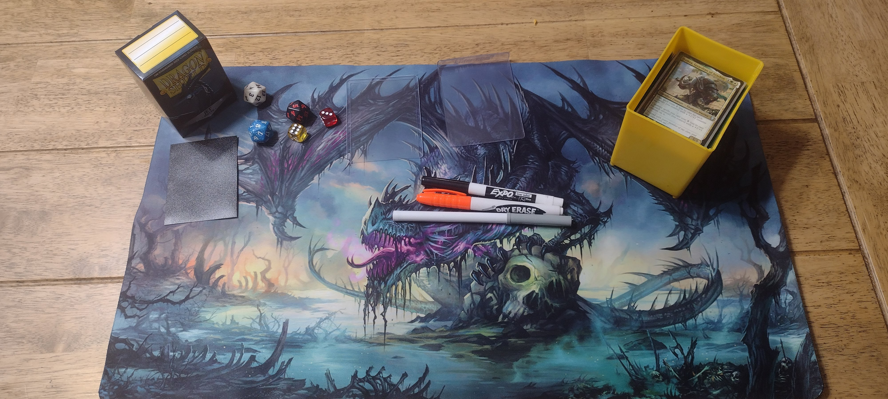
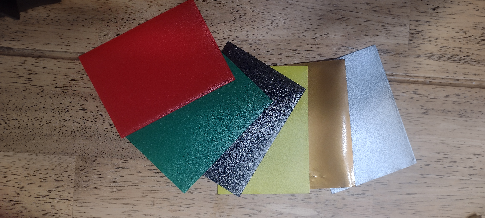
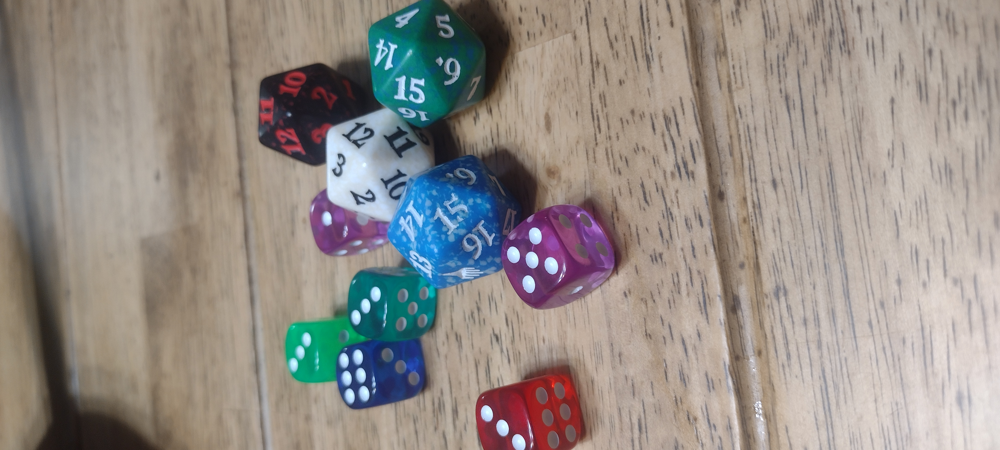
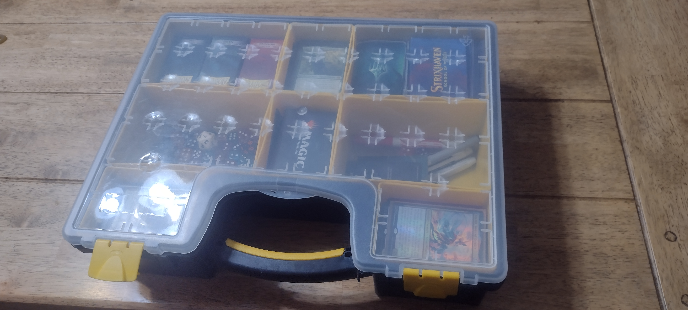

Accessories That I Use
Photo By Author
Accessories are an essential part of every Magic: The Gathering player's experience. They serve many different functions, ranging from protecting your cards to keeping track of different parts of the game to just looking cool. Below is a list of some of the products that I use that I love and reccommend to anyone who wants to get into Magic: the Gathering.
Table of Contents
Card Sleeves
Photo By Author
Card sleeves are essential to preserving and protecting your favorite MTG cards, espeacially the more expensive ones. Personally, I use Dragonshield card sleeves. They have worked incredibly well for me. They shuffle well, are durable, and overall look very nice.
Dice
Photo By Author
Dice are considered to be an essential part of Magic: the Gathering. They can represent anything from your life total to counters on cards. Nearly every MTG player uses them, and they make keeping track of game elements so much easier. For me, dice don't have to be expensive, but I do need a lot of them. As a player with a +1/+1 counters deck, there tends to be a ton of counters being distributed left and right. Players can use any type of dice they want, and I just bought a pack of 100 rainbow dice on amazon. They aren't super fancy, but they do the job well.
Deck Boxes
Deck Boxes are another essential part of Magic: the Gathering. They are by far the best way to transport and, again, protect your MTG cards. While, yes, rubber bands can hold your cards together, and ziplock bags can keep your cards in one place, but who would trust their expensive cards with such flimsy holders? Deck boxes are the only sure way to keep your cards safe while you transport them from place to place.

Photo By Author
There are many options out there for deck boxes, each one suited for different purposes. Some of them aren't even made specifically for Magic: gathering. Instead, I use a Stanley Deep Pro Small Parts Organizer. For me, it works very well. It can hold all my decks, dice, and more. I see a lot of other people use similar hardware boxes. My piece of advice for you when shopping for one of these is to make sure it can actually fit MTG cards in it. The Stanley does this perfectly.
These are just a few of the accessories that make up the MTG world, but they are some of the most important. There are many options for all of these and more, so you can't go wrong when shopping, as long as you ensure that the stuff you buy is of good quality for what you buy.